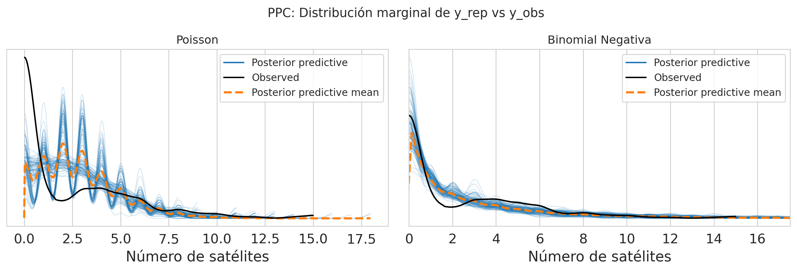
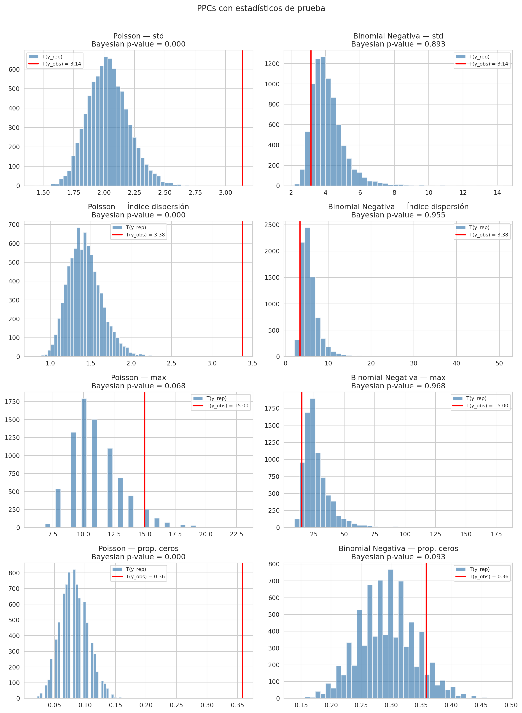
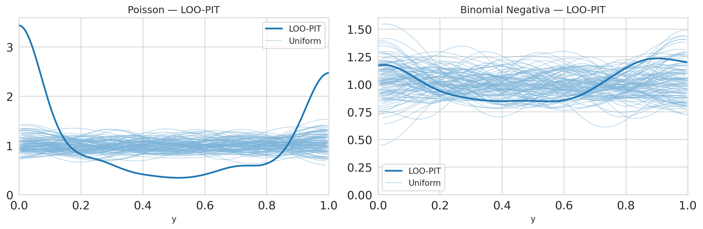
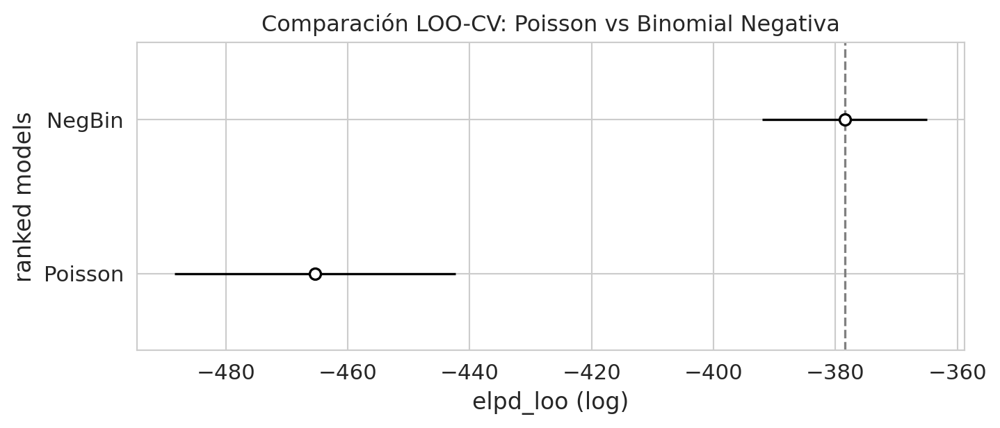

Code
import numpy as np
import pandas as pd
import matplotlib.pyplot as plt
import seaborn as sns
import arviz as az
sns.set_style('whitegrid')
np.random.seed(42)Bayesian Workflow — Etapa: Model Checking (Gelman et al. 2020)
Los PPCs evalúan si el modelo es capaz de generar datos similares a los observados. Para datos de conteo, el foco es en sobredispersión: el fenómeno donde la varianza supera a la media (Var[Y] > E[Y]), que Poisson no puede capturar pero la Binomial Negativa sí.
Pregunta central: ¿El modelo Poisson subestima la varianza de los datos de cangrejos? ¿La Binomial Negativa resuelve este problema?
Ejecutar primero 03_inferencia_bayesiana.ipynb para generar outputs/pois_idata.nc y outputs/neg_idata.nc con los grupos posterior_predictive y log_likelihood.
import numpy as np
import pandas as pd
import matplotlib.pyplot as plt
import seaborn as sns
import arviz as az
sns.set_style('whitegrid')
np.random.seed(42)# Cargar InferenceData con posterior predictive
idata_pois = az.from_netcdf('../outputs/pois_idata.nc')
idata_nb = az.from_netcdf('../outputs/neg_idata.nc')
# az.plot_ppc exige que la var en posterior_predictive coincida con observed_data ('y')
idata_pois.posterior_predictive = idata_pois.posterior_predictive.rename({'y_rep': 'y'})
idata_nb.posterior_predictive = idata_nb.posterior_predictive.rename({'y_rep': 'y'})
# Datos observados
df = pd.read_csv('../data/agresti_crab_satellites_dataset.csv')
y_obs = df['Sa'].values
print(f"Grupos disponibles Poisson: {list(idata_pois.groups())}")
print(f"Grupos disponibles NegBin: {list(idata_nb.groups())}")Grupos disponibles Poisson: ['posterior', 'posterior_predictive', 'log_likelihood', 'sample_stats', 'observed_data']
Grupos disponibles NegBin: ['posterior', 'posterior_predictive', 'log_likelihood', 'sample_stats', 'observed_data']Bajo Poisson: E[Y] = Var[Y] → Índice de dispersión D = Var/Mean ≈ 1
Si D > 1 → sobredispersión (la Binomial Negativa es más apropiada)
mean_obs = np.mean(y_obs)
var_obs = np.var(y_obs)
D_obs = var_obs / mean_obs # Índice de dispersión (VMR)
print(f"Media observada: {mean_obs:.3f}")
print(f"Varianza observada: {var_obs:.3f}")
print(f"Índice de dispersión (D=V/M): {D_obs:.3f} {'← sobredispersión' if D_obs > 1 else '← equidispersión'}")
print(f"Proporción de ceros: {np.mean(y_obs == 0):.3f}")
print(f"Valor máximo: {np.max(y_obs)}")Media observada: 2.919
Varianza observada: 9.855
Índice de dispersión (D=V/M): 3.376 ← sobredispersión
Proporción de ceros: 0.358
Valor máximo: 15az.plot_ppc superpone la distribución de los datos replicados y_rep sobre y_obs. Si el modelo es adecuado, la nube de y_rep debe envolver a y_obs.
fig, axes = plt.subplots(1, 2, figsize=(12, 4))
az.plot_ppc(idata_pois, ax=axes[0], num_pp_samples=100)
axes[0].set_title('Poisson')
axes[0].set_xlabel('Número de satélites')
az.plot_ppc(idata_nb, ax=axes[1], num_pp_samples=100)
axes[1].set_title('Binomial Negativa')
axes[1].set_xlabel('Número de satélites')
axes[1].set_xlim(0, 17.5)
plt.suptitle('PPC: Distribución marginal de y_rep vs y_obs', fontsize=13)
plt.tight_layout()
plt.show()
Para cada estadístico T, comparamos T(y_obs) con la distribución de T(y_rep). Si T(y_obs) cae en la cola de T(y_rep) → el modelo no captura esa propiedad.
Estadísticos para sobredispersión: - std: ¿captura la dispersión total? - var/mean: índice de dispersión (D=1 bajo Poisson) - max: ¿captura las colas pesadas? - mean(y==0): ¿captura la inflación de ceros?
def dispersion_index(y):
"""Índice de dispersión: Var/Mean. Bajo Poisson debe ser ~1."""
return np.var(y) / np.mean(y)
def prop_zeros(y):
"""Proporción de ceros."""
return np.mean(y == 0)
test_stats = {
'std': np.std,
'Índice dispersión': dispersion_index,
'max': np.max,
'prop. ceros': prop_zeros,
}# Extraer muestras y_rep
y_rep_pois = idata_pois.posterior_predictive['y'].values # shape: (chains, draws, N)
y_rep_nb = idata_nb.posterior_predictive['y'].values
# Aplanar chains y draws
y_rep_pois_flat = y_rep_pois.reshape(-1, y_rep_pois.shape[-1]) # (S, N)
y_rep_nb_flat = y_rep_nb.reshape(-1, y_rep_nb.shape[-1])
print(f"y_rep_pois shape: {y_rep_pois_flat.shape}")
print(f"y_rep_nb shape: {y_rep_nb_flat.shape}")y_rep_pois shape: (8000, 173)
y_rep_nb shape: (8000, 173)fig, axes = plt.subplots(len(test_stats), 2, figsize=(12, 4 * len(test_stats)))
for row, (stat_name, stat_fn) in enumerate(test_stats.items()):
t_obs = stat_fn(y_obs)
for col, (y_rep_flat, model_name) in enumerate([
(y_rep_pois_flat, 'Poisson'),
(y_rep_nb_flat, 'Binomial Negativa')
]):
t_rep = np.array([stat_fn(y_rep_flat[s]) for s in range(y_rep_flat.shape[0])])
p_val = np.mean(t_rep >= t_obs)
ax = axes[row, col]
ax.hist(t_rep, bins=40, color='steelblue', alpha=0.7, label='T(y_rep)')
ax.axvline(t_obs, color='red', lw=2, label=f'T(y_obs) = {t_obs:.2f}')
ax.set_title(f'{model_name} — {stat_name}\nBayesian p-value = {p_val:.3f}')
ax.legend(fontsize=8)
plt.suptitle('PPCs con estadísticos de prueba', fontsize=13, y=1.01)
plt.tight_layout()
plt.show()
El LOO-PIT evalúa calibración: si el modelo está bien calibrado, los quantiles de y_obs dentro de la distribución predictiva leave-one-out deben ser uniformes.
fig, axes = plt.subplots(1, 2, figsize=(12, 4))
az.plot_loo_pit(idata_pois, y='y', ax=axes[0])
axes[0].set_title('Poisson — LOO-PIT')
az.plot_loo_pit(idata_nb, y='y', ax=axes[1])
axes[1].set_title('Binomial Negativa — LOO-PIT')
plt.tight_layout()
plt.show()
az.compare usa Leave-One-Out Cross-Validation para comparar la capacidad predictiva de los modelos. Un ELPD más alto = mejor predicción out-of-sample.
comparison = az.compare({'Poisson': idata_pois, 'NegBin': idata_nb})
display(comparison)
az.plot_compare(comparison, figsize=(8, 3))
plt.title('Comparación LOO-CV: Poisson vs Binomial Negativa')
plt.show()| rank | elpd_loo | p_loo | elpd_diff | weight | se | dse | warning | scale | |
|---|---|---|---|---|---|---|---|---|---|
| NegBin | 0 | -378.508098 | 2.638793 | 0.000000 | 1.000000e+00 | 13.532134 | 0.000000 | False | log |
| Poisson | 1 | -465.336615 | 5.403561 | 86.828517 | 7.120415e-12 | 23.062991 | 17.337162 | False | log |

# Tabla resumen
rows = []
for stat_name, stat_fn in test_stats.items():
t_obs = stat_fn(y_obs)
for y_rep_flat, model_name in [
(y_rep_pois_flat, 'Poisson'),
(y_rep_nb_flat, 'NegBin')
]:
t_rep = np.array([stat_fn(y_rep_flat[s]) for s in range(y_rep_flat.shape[0])])
rows.append({
'Modelo': model_name,
'Estadístico': stat_name,
'T(y_obs)': round(t_obs, 3),
'E[T(y_rep)]': round(np.mean(t_rep), 3),
'Bayesian p-value': round(np.mean(t_rep >= t_obs), 3),
})
summary_df = pd.DataFrame(rows).sort_values(['Estadístico', 'Modelo'])
display(summary_df)| Modelo | Estadístico | T(y_obs) | E[T(y_rep)] | Bayesian p-value | |
|---|---|---|---|---|---|
| 5 | NegBin | max | 15.000 | 27.530 | 0.968 |
| 4 | Poisson | max | 15.000 | 11.038 | 0.068 |
| 7 | NegBin | prop. ceros | 0.358 | 0.291 | 0.093 |
| 6 | Poisson | prop. ceros | 0.358 | 0.082 | 0.000 |
| 1 | NegBin | std | 3.139 | 4.115 | 0.894 |
| 0 | Poisson | std | 3.139 | 2.034 | 0.000 |
| 3 | NegBin | Índice dispersión | 3.376 | 5.772 | 0.954 |
| 2 | Poisson | Índice dispersión | 3.376 | 1.427 | 0.000 |
El modelo Poisson falla en todas las dimensiones evaluadas:
La Binomial Negativa (con α_sm ≈ 1.11, dispersión moderada) resuelve parcialmente el problema:
Ambos modelos comparten el mismo predictor lineal (intercept + ancho de caparazón), y ninguno tiene un mecanismo explícito para el exceso de ceros. Hay hembras que estructuralmente no atraen satélites —posiblemente por condición física o tamaño muy reducido— y ese proceso generador de ceros es distinto del proceso de conteo.
La extensión natural es un modelo de mezcla con inflación de ceros:
En ambos casos el modelo tiene dos componentes: uno que decide si la hembra “puede” tener satélites (logístico sobre W), y otro que modela cuántos dado que puede (Poisson o NegBin sobre W).